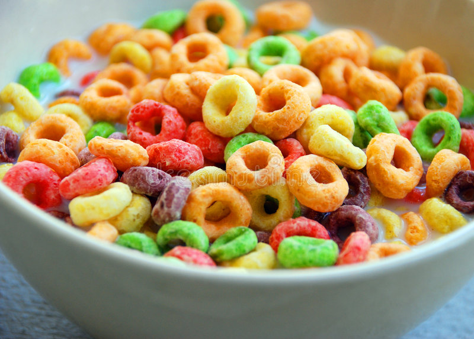

Cereal

Description:
The perfect bowl of cereal involves much more nuance than simply pouring milk and cereal into a bowl.
Ingredients:
- Your favorite bowl and spoon
- Your preferred cereal
- Freshly squeezed milk
Steps:
- Approach your cow, ask them if they are ready to be milked. Once they are ready, proceed to step 2.
- Tickle the udder until it blasts white liquid gold into thine bowl
- Your bowl now full of liquid, walk it carefuly to your chef station, so you do not spill a drop
- Normally, any sane person would pour their cereal before the milk, but this is a special case
- Pour your cereal with the gentle grace of a figure skater gliding across a rink of ice
- Turn on cartoons to enhance the cereal atmosphere
- Eat & Enjoy!